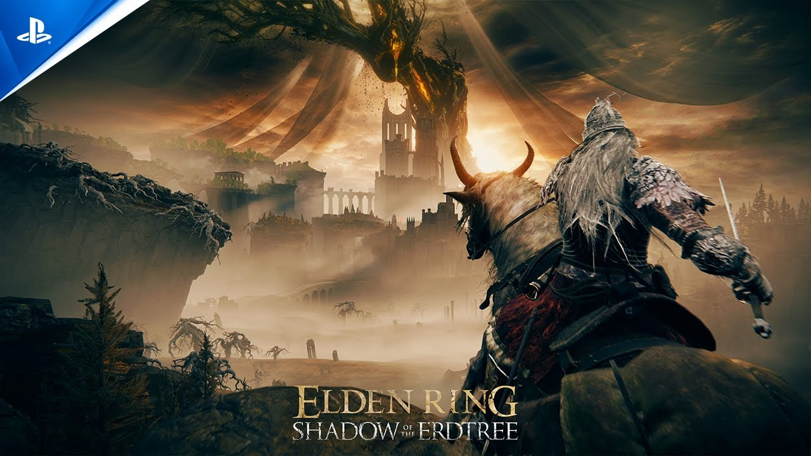

Le jeu vidéo, vraie culture de notre génération
Longtemps méprisé, pris pour un simple passe-temps d'enfants, le jeu vidéo est devenu la plus grande industrie culturelle du monde. Et plus personne, aujourd'hui, n'ose vraiment prétendre le contraire.

Plus grand que le cinéma et la musique réunis
Les chiffres donnent le vertige. Le jeu vidéo pèse aujourd'hui plus que le cinéma et la musique additionnés. Ce qui passait pour un loisir marginal est devenu un géant économique, un pilier de la culture mondiale. On ne parle plus d'un divertissement de niche, mais d'une industrie dominante.
Cette montée en puissance a été fulgurante. En quelques décennies, le jeu vidéo est passé des salles d'arcade et des chambres d'adolescents au centre de la culture populaire. Il a conquis tous les âges, tous les milieux, tous les continents.
Pourtant, son prestige n'a pas suivi aussi vite que son succès. Longtemps, on a refusé de le prendre au sérieux, de le considérer comme un art à part entière. Ce mépris est en train de tomber, et c'est une révolution culturelle silencieuse.
Un art à part entière
Scénarios bouleversants, directions artistiques sublimes, musiques inoubliables : les plus grands jeux rivalisent avec les plus grandes œuvres. Le jeu vidéo raconte des histoires qu'aucun autre art ne peut raconter.
Car il possède une arme unique : l'interactivité. Là où un film se regarde, un jeu se vit. On ne suit pas un héros, on le devient. On fait des choix, on en subit les conséquences, on s'implique corps et âme. Cette immersion crée une émotion d'une intensité particulière, qu'aucun autre médium ne peut égaler.
Une culture qui infuse tout
L'influence du jeu vidéo déborde largement de son écran. La mode s'inspire de ses esthétiques, la musique de ses codes, le cinéma de ses récits. Les plus grandes marques collaborent avec les jeux les plus populaires, les artistes y donnent des concerts virtuels.
Le jeu vidéo est devenu une matrice culturelle qui irrigue tout le reste. Il façonne les références, le langage, l'imaginaire de toute une génération. On cite des jeux comme on citait autrefois des films ou des chansons. Il est devenu un socle commun, une culture partagée.
Cette centralité en fait un enjeu majeur, économique et même politique. Les grandes puissances industrielles se disputent ce marché colossal, les studios s'achètent à prix d'or, et le contrôle de ces mondes virtuels devient un enjeu stratégique. Derrière le divertissement se jouent de vraies batailles de pouvoir.
Le sport du futur
L'esport, la compétition de jeu vidéo, remplit désormais des stades et rassemble des audiences qui rivalisent avec les plus grands sports traditionnels. Des joueurs sont devenus des stars mondiales, admirées comme des athlètes.
Ce phénomène aurait semblé absurde il y a vingt ans. Aujourd'hui, c'est une évidence : regarder d'autres jouer est devenu un spectacle à part entière, avec ses héros, ses rivalités, ses émotions. Une nouvelle forme de sport est née, et elle ne fait que grandir.
La culture de demain
Le jeu vidéo n'est plus l'avenir de la culture : il en est déjà le présent. Il raconte, rassemble, influence, émeut, à une échelle que peu de médiums ont atteinte. Le mépris dont il a longtemps souffert ressemble désormais à une erreur d'une autre époque.
Reconnaître le jeu vidéo comme une grande culture, c'est reconnaître la génération qui a grandi avec lui. C'est accepter que les formes de l'art évoluent, que chaque époque invente ses propres chefs-d'œuvre. Et ceux de notre génération, en grande partie, se jouent manette en main.
On a longtemps pris le jeu vidéo pour un passe-temps. C'était la culture d'une génération entière.